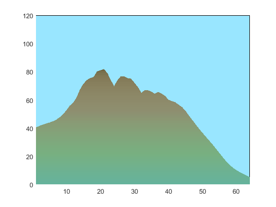

Contents
function landscape()
% Iteration muss zwingend >= 1 sein. im ersten Druchlauf werden 3 % Ecken des Berges gesetzt (Linker Rand, Mitte(Berg) und rechter Rand) % im 4. Durchlauf werden Korrekturen vorgenommen, Enden flächer etc. % JITTER: Random Abweichung der zwischenschritte % um diesen Zufallsbereich weicht der Geländepunkt vom Mittelwert der % seiner Nachbarn ab (100 heisst, der Punkt kann um +- 50 abweichen) JITTER = 40; % maximalabweichung vom mittelwert der 2 nachbarn, wenn ein neuer punkt gerechent wird JITTERBALANCE = 0.75; %0.5 bedeutet, der Jitter ist nach oben und unten gleich verteilt. 1= 100% nach oben. DAEMPFUNG= 1.4; %Jitter wird nach jeder iteration gedämpft BERGOFFSET = 45; % wie viel höher ist die Bergspitze YLIMITS = [5 85]; % Keine Punkte ausserhalb [von bis] zugelassen. PLATFORMOFFSET=+5; % die spieler-orte // POSTSMOOTHING=110; % unterhalb bergrenze wird nachträglich geglättet FELSUEBERGANG=[50 70];% zwischen 60 und 90 Höhe passiert der Felsübergang, keine Glättung mehr HYSTERESIS=10; % Hysterese zur Felsgrenze max_iterations=6; % 5-8 haben sich bewährt. Erzeugt polygon mit (3+2^max_iterations) Ecken
Limits für max_iterations durchsetzten
max_iterations=floor(max_iterations); if (max_iterations < 1) iterations = 1; end if (max_iterations > 9) iterations = 9;end % 1+2^9 Punkte reichen aus! % Vektor initialisieren terrain=zeros(max_iterations,2^max_iterations+1); %Start und Ende und mittelpunkt setzen terrain (1,2)= rand*1.5*JITTER + BERGOFFSET; % Mittenwert (der Berg) terrain (1,1) = rand*50; % Startwert (Linker Rand) terrain (1,3) = rand*50; % Endwert (rechter Rand) % die Terrainpunkte werden in einer Matrix erstellt. ähnlich wie bei der % erstellung des pascalschen Dreiecks. Zu Beginn sind nur in der ersten % Zeile die Werte von Links, Rechts und der Mitte (Berg). Jede Iteration % erzeugt die Werte in eine nächste Zeile und fügt dort die neuen Punkte % ein. start bei 2, weil die erste bereits gesetzt (die 3 Startpunkte). for rowindex=2:1:max_iterations %für jede iteration gibts eine neue Zeile in der Matrix for colindex=1:1:2^rowindex+1 %Jede Zeile hat mehr Werte als die letzte if mod(colindex, 2) > 0 %ungerade zeilen übernehmen bestehende werte (verschoben) terrain(rowindex,colindex)= terrain(rowindex-1, (colindex+1)/2); else %gerade Zeilen berechnen einen neuen mittelwert +- random left= terrain(rowindex-1, (colindex)/2); right= terrain(rowindex-1, (colindex+2)/2); % Die Dämpfung wichtig: Einerseits soll die Gesamtlandschaft % nicht zu flach sein, andernseits müssen die % Zufallshöhenunterschiede bei fortschreitenden Detailgraden % immer kleiner werden. Um zu Beginn wenig zu dämpfen und % später sehr stark, wird die DAEMPFUNG^ITERATION verwendet. % die Korrektur an der Iteration (rowidex-1.8) stellt quasi den % Arbeitspunkt der Dämpfung ein. %terrain(rowindex,colindex)= (left+right)/2 + (rand*JITTER-(JITTER/2))/DAEMPFUNG^((rowindex-2)*DAEMPFUNG^2.2); %terrain(rowindex,colindex)= (left+right)/2 + (rand*JITTER-(JITTER/3.7))/DAEMPFUNG^(rowindex-2); terrain(rowindex,colindex)= (left+right)/2 + (rand*JITTER-(JITTER*(1-JITTERBALANCE)))/DAEMPFUNG^((rowindex-2.4)*DAEMPFUNG^2.2); % if terrain(rowindex,colindex) < YLIMITS(1) terrain(rowindex,colindex)= YLIMITS(1);end % if terrain(rowindex,colindex) > YLIMITS(2) terrain(rowindex,colindex)= YLIMITS(2);end end end % debug: plot(terrain(rowindex,1:2^rowindex+1));axis([1 inf 0 100]) % *Ein paar Korrekturen für die Positionierung, es geht % am einfachsten in der 4. Iteration, wenn 17 Punkte gesetzt sind: if rowindex == 4 % Beide Spieler etwas nach unten. terrain(4,2) = max(terrain(4,2) + PLATFORMOFFSET,5); terrain(4,16)= max(terrain(4,16) + PLATFORMOFFSET,5); %Spielfeld gegen aussen flacher machen, gegen innen leicht flacher. terrain(4,1) = terrain(4,1)-((terrain(4,1)-terrain(4,2))/1.1); terrain(4,3) = terrain(4,3)-((terrain(4,3)-terrain(4,2))/2); % auch für den anderen Spieler: terrain(4,17) = terrain(4,17)-((terrain(4,17)-terrain(4,16))/1.1); terrain(4,15) = terrain(4,15)-((terrain(4,15)-terrain(4,16))/2); end end
Limits
%Versetzen Tiefster Punkt als Refernz auf YLIMITS(1) lowestpoint=min(terrain(max_iterations,:)); terrain=terrain-lowestpoint+YLIMITS(1); %neuen höchsten Punkt suchen, wenn höher als limite, wird das ganze terrain %zusammengestaucht highestpoint=max(terrain(max_iterations,:)) if highestpoint > YLIMITS(2) terrain=terrain/(highestpoint/YLIMITS(2)) end
highestpoint = 81.5677
Glättung:
contour_raw=terrain(max_iterations,:); %relevante letzte zeile aus den generierten Terrain Daten kopieren contour_soft=contour_raw; %Diese Version wird geglättet contour_mix=contour_raw; %Diese Version wird die gemischte for s=1:floor(POSTSMOOTHING/100*2^max_iterations) % so oft durchlaufen, wie konfiguriert ist for colindex=2:1:2^rowindex % Letzte Zeile ist relevant ==> glätten, aber Bergspitzen / Felsen unberührt lassen mittelwert=(contour_soft(colindex-1)+contour_soft(colindex+1))/2; % Mittelwert von der 2 nachbarpunkte difference = contour_soft(colindex)-mittelwert; % Abweichung gegenüber dem mittel der 2 Nachbarpunkte contour_soft(colindex)= contour_soft(colindex)-0.1*(difference); %Angleichen in kleinen Schritten end end %Mix raw und soft anhand der Parameter FELSUEBERGANG(1) und (2) for colindex=1:1:size(contour_raw,2) if contour_raw(colindex) < FELSUEBERGANG(1) % Nur Berge contour_mix(colindex)=contour_soft(colindex); elseif contour_raw(colindex) > FELSUEBERGANG(2) % Nur Hügel contour_mix(colindex)=contour_raw(colindex); else % Mischung felsanteil= (contour_raw(colindex)-FELSUEBERGANG(1))/(FELSUEBERGANG(2)-FELSUEBERGANG(1)); contour_mix(colindex)= felsanteil*contour_raw(colindex) + (1-felsanteil)*contour_soft(colindex); end end %clear figure, prepare poygon vertex clc clf terrainshapeY = [0, (contour_mix), 0]; % die interssante zeile übernehmen vorne ein und hinten zwei 0 als y-wert terrainshapeX = [0, 0:1:size(terrainshapeY,2)-3, size(terrainshapeY,2)-3 ]; % die X-werte füllen, am schluss wieder auf x=0 weil für polygon c=terrainshapeY; colormap(0.4*summer+0.4*flipud(pink)+0.1*flipud(winter)); %sky x = [0 64 64 0]; y = [0 0 120 120]; patch(x,y,[0.6 0.9 1]); %terrain patch(terrainshapeX,terrainshapeY, c,'EdgeColor','interp','MarkerFaceColor','flat'); axis([1 inf 0 120])
end